Dinamica: le forze e i loro effetti
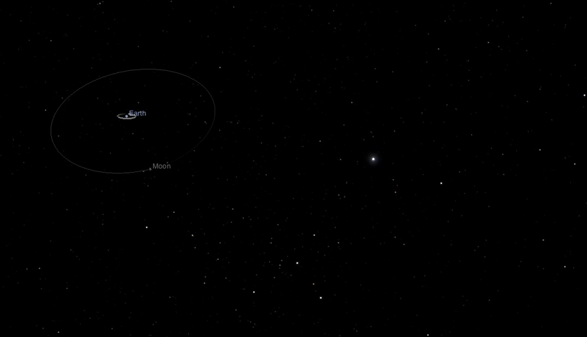Dinamica: per muovere un oggetto...
- Occorre spingerlo o tirarlo
- Più forte è la spinta più rapido è lo spostamento
- Spinta e trazione possono essere in diverse direzioni
- Oggetti pesanti si spostano con più difficoltà
dinamica: formalizziamo l'intuizione
Spingere un oggetto \( \Rightarrow \) Esercitare una forza
La spinta ha intensità, direzione e verso \( \Rightarrow \) La forza è un vettore
Oggetti pesanti si spostano con più difficoltà \( \Rightarrow \) Massa inerziale: difficoltà nel cambiare velocità
Risultante delle forze: somme vettoriali
\[ \vec{F} = \sum_{i} \vec{F}_{i} \]
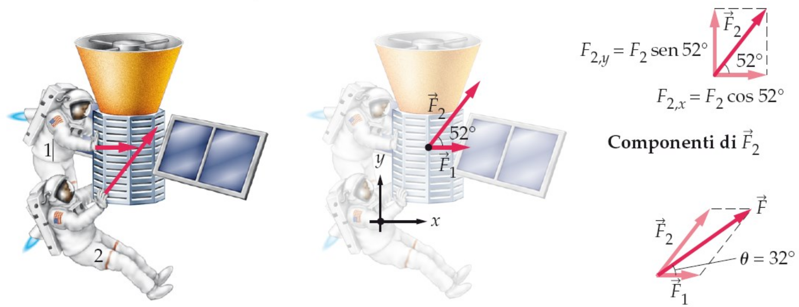Prima legge di Newton
principio d'inerzia
In assenza di forze esterne, un oggetto continuerà a muoversi di moto rettilineo uniforme o resterà in quiete
Sistemi di riferimento
inerziale e non inerziale: 1
Un sistema di riferimento inerziale è quello in cui è valida la prima legge di Newton
Sistemi di riferimento
inerziale e non inerziale: 2
Un sistema di riferimento inerziale è quello in cui è valida la prima legge di Newton
Seconda legge di Newton
equazione fondamentale della dinamica
Forza ed accelerazione sono grandezze vettoriali direttamente proporzionali tra loro. Il loro rapporto è la massa, dipendente dal corpo in esame
\( \vec{F} = m \vec{a} \)
Dimensioni di una forza: Newton
\[ \vec{F} = m \vec{a} \]
\[ N \, = \frac{kg \cdot m}{s^{2}} \]
Terza legge di Newton
principio di azione e reazione
Quando due corpi interagiscono, la forza \( \vec{F}_{i \to j} \), che il corpo \( \mathbf{i} \) esercita sul corpo \( \mathbf{j} \) è uguale e opposta alla forza \( \vec{F}_{j \to i} \) che il corpo \( \mathbf{j} \) esercita sul corpo \( \mathbf{i} \).
\( \vec{F}_{i \to j} = - \vec{F}_{j \to i} \)
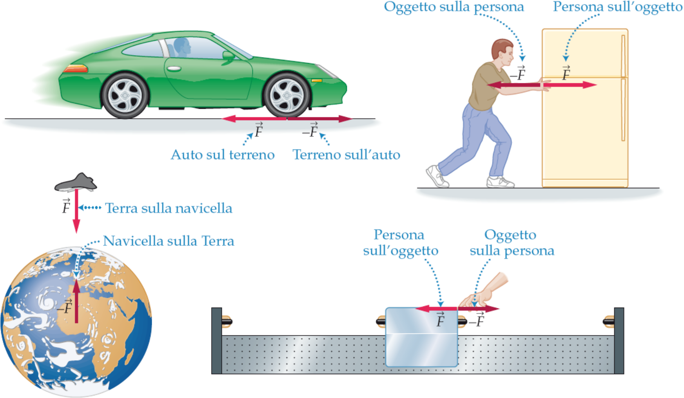Rappresentazione delle forze
diagramma di corpo libero
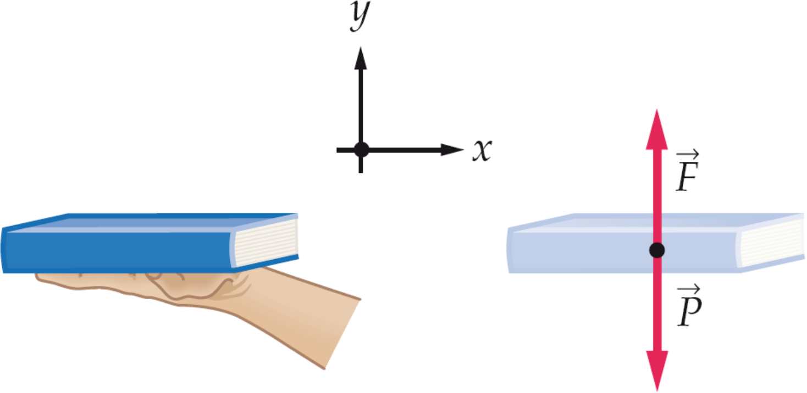Forze: 1
forza gravitazionale
\[ \vec{F} = - \frac{G m_{1} m_{2}}{r^2} \vec{u}_{r}; \; \vec{u}_{r} = \frac{\vec{r}}{r} \]
 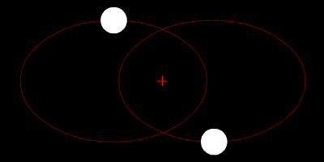
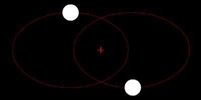

Forze: 2
forza peso
\[ \vec{F} = m \vec{g} \]
Forze: 3
reazione vincolare normale
Forze: 4
attrito statico e dinamico
Attrito statico: \( F_{s} \leq \mu_{s} \cdot N \)
Attrito dinamico: \( F_{d} = \mu_{d} \cdot N \)
\( F_{d} \leq F_{s} \)
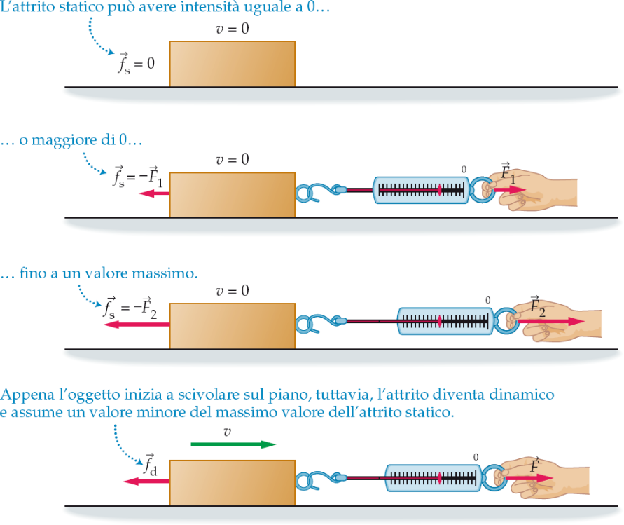Forze: 5
Funi ideali e tensione
Una fune ideale è inestensibile e di massa trascurabile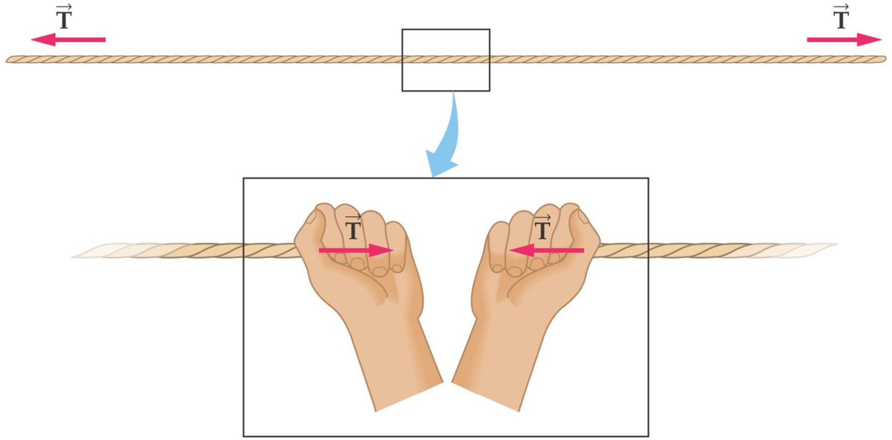
Forze: 5
Alcuni esempi di funi ideali
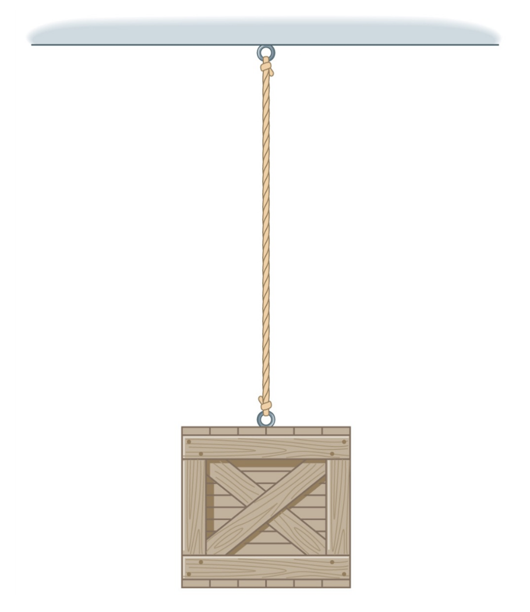 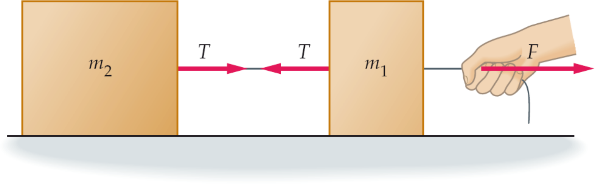Forze: 5
Funi e carrucole
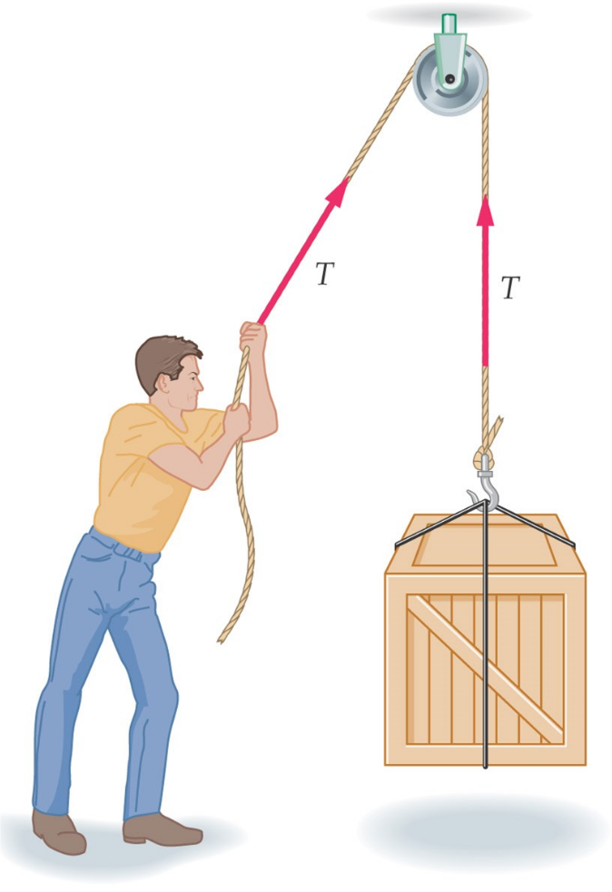 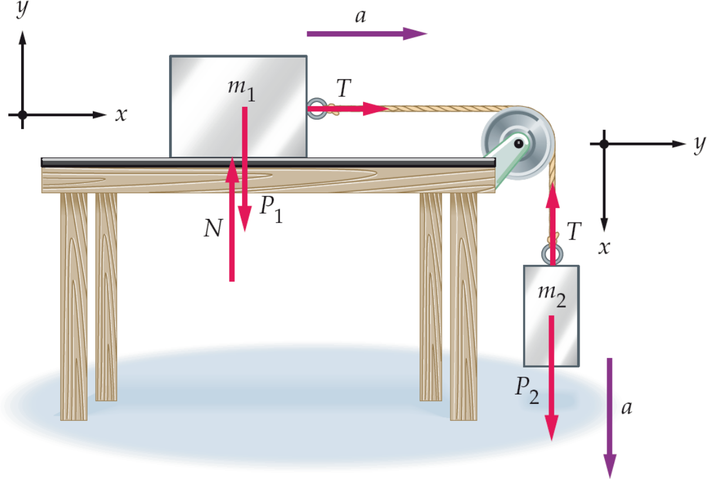Forze: 6
forza elastica
\( \vec{F} = -k \Delta \vec{x} = -k (\vec{x} - \vec{x}_{0}) \)
ponendo per comodità \( \vec{x}_{0}=0 \) otteniamo
\( \vec{F} = -k \vec{x} \)
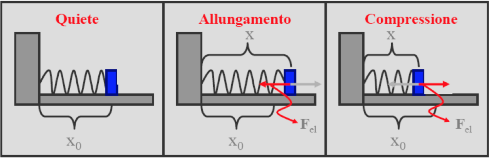Moto circolare: 1
Considerazioni intuitive
- \( x(t) \, [m] \Rightarrow \theta(t) \, [rad] \)
- \( v(t) \, [m/s] \Rightarrow \omega(t) \, [rad/s] \)
- \( a(t) \, [m/s^{2}] \Rightarrow \alpha(t) \, [rad/s^{2}] \)
Moto circolare: 2
Derivazione dell'accelerazione centripeta
\[ a_{c} = \frac{v^{2}}{r} = \omega^{2} r \]
\[ \frac{\mathrm{d}\theta}{\mathrm{d}t} = \omega = \frac{v}{r} \]